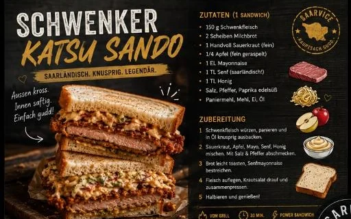

OMA HILDE
GENEHMIGT
★ 10/10 ★
GENEHMIGT
★ 10/10 ★

Schwenker Katsu Sando
🔊 Crunch: 88 dB
🪵 580 kcal = 40 Min. Holzhacken
⏱️ 24h Bier-Marinade
Savoir-Vivre-Index: 65% Saarkohle / 35% Tokio-Paris
Schwenkfleisch in knuspriger Panko-Panade, weiches Shokupan-Milchbrot, Apfel-Sauerkraut-Slaw, rauchige Maggi-Miso-Glaze. Die Japaner machen das ähnlich. Awwer ohne Schwenker. Von daher.
👵 Oma Hilde: „Paniertes Schwenkfleisch im Weißbrot? ... Gib her, des schmeckt ja unverschämt saftig!“